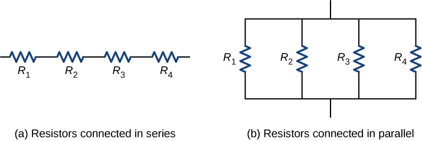
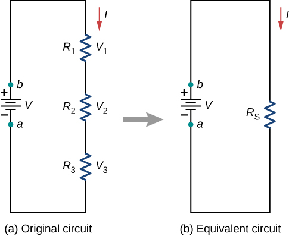
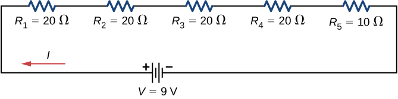
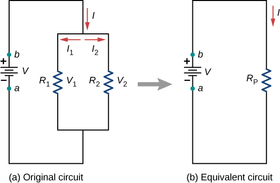
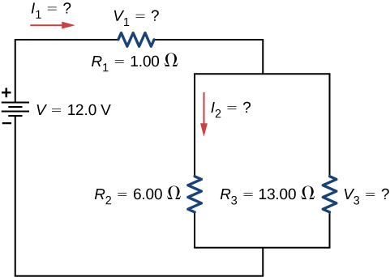
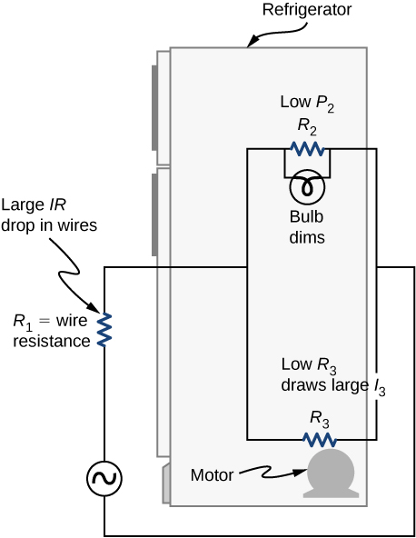
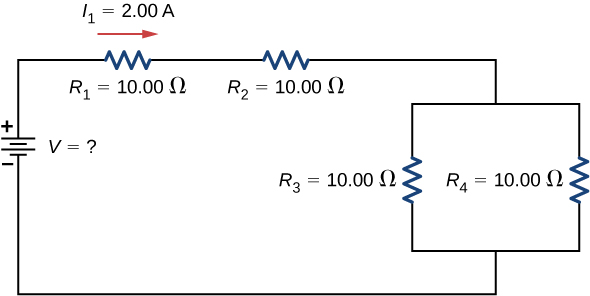

Calculate the equivalent resistance of resistors connected in series
Calculate the equivalent resistance of resistors connected in parallel
In Current and Resistance, we described the term ‘resistance’ and explained the basic design of a resistor. Basically, a resistor limits the flow of charge in a circuit and is an ohmic device where Most circuits have more than one resistor. If several resistors are connected together and connected to a battery, the current supplied by the battery depends on the equivalent resistance of the circuit.
The equivalent resistance of a combination of resistors depends on both their individual values and how they are connected. The simplest combinations of resistors are series and parallel connections ([link]). In a series circuit, the output current of the first resistor flows into the input of the second resistor; therefore, the current is the same in each resistor. In a parallel circuit, all of the resistor leads on one side of the resistors are connected together and all the leads on the other side are connected together. In the case of a parallel configuration, each resistor has the same potential drop across it, and the currents through each resistor may be different, depending on the resistor. The sum of the individual currents equals the current that flows into the parallel connections.
(a) For a series connection of resistors, the current is the same in each resistor. (b) For a parallel connection of resistors, the voltage is the same across each resistor.

Resistors in Series
Resistors are said to be in series whenever the current flows through the resistors sequentially. Consider [link], which shows three resistors in series with an applied voltage equal to Since there is only one path for the charges to flow through, the current is the same through each resistor. The equivalent resistance of a set of resistors in a series connection is equal to the algebraic sum of the individual resistances.
(a) Three resistors connected in series to a voltage source. (b) The original circuit is reduced to an equivalent resistance and a voltage source.

In [link], the current coming from the voltage source flows through each resistor, so the current through each resistor is the same. The current through the circuit depends on the voltage supplied by the voltage source and the resistance of the resistors. For each resistor, a potential drop occurs that is equal to the loss of electric potential energy as a current travels through each resistor. According to Ohm’s law, the potential drop V across a resistor when a current flows through it is calculated using the equation where I is the current in amps (A) and R is the resistance in ohms Since energy is conserved, and the voltage is equal to the potential energy per charge, the sum of the voltage applied to the circuit by the source and the potential drops across the individual resistors around a loop should be equal to zero:
This equation is often referred to as Kirchhoff’s loop law, which we will look at in more detail later in this chapter. For [link], the sum of the potential drop of each resistor and the voltage supplied by the voltage source should equal zero:
Since the current through each component is the same, the equality can be simplified to an equivalent resistance, which is just the sum of the resistances of the individual resistors.
Any number of resistors can be connected in series. If N resistors are connected in series, the equivalent resistance is
One result of components connected in a series circuit is that if something happens to one component, it affects all the other components. For example, if several lamps are connected in series and one bulb burns out, all the other lamps go dark.
Equivalent Resistance, Current, and Power in a Series Circuit
A battery with a terminal voltage of 9 V is connected to a circuit consisting of four and one resistors all in series ([link]). Assume the battery has negligible internal resistance. (a) Calculate the equivalent resistance of the circuit. (b) Calculate the current through each resistor. (c) Calculate the potential drop across each resistor. (d) Determine the total power dissipated by the resistors and the power supplied by the battery.
A simple series circuit with five resistors.

Strategy
In a series circuit, the equivalent resistance is the algebraic sum of the resistances. The current through the circuit can be found from Ohm’s law and is equal to the voltage divided by the equivalent resistance. The potential drop across each resistor can be found using Ohm’s law. The power dissipated by each resistor can be found using , and the total power dissipated by the resistors is equal to the sum of the power dissipated by each resistor. The power supplied by the battery can be found using .
Solution
The equivalent resistance is the algebraic sum of the resistances:
The current through the circuit is the same for each resistor in a series circuit and is equal to the applied voltage divided by the equivalent resistance:
The potential drop across each resistor can be found using Ohm’s law:
Note that the sum of the potential drops across each resistor is equal to the voltage supplied by the battery.
The power dissipated by a resistor is equal to , and the power supplied by the battery is equal to :
Significance
There are several reasons why we would use multiple resistors instead of just one resistor with a resistance equal to the equivalent resistance of the circuit. Perhaps a resistor of the required size is not available, or we need to dissipate the heat generated, or we want to minimize the cost of resistors. Each resistor may cost a few cents to a few dollars, but when multiplied by thousands of units, the cost saving may be appreciable.
Check Your Understanding Some strings of miniature holiday lights are made to short out when a bulb burns out. The device that causes the short is called a shunt, which allows current to flow around the open circuit. A “short” is like putting a piece of wire across the component. The bulbs are usually grouped in series of nine bulbs. If too many bulbs burn out, the shunts eventually open. What causes this?
The equivalent resistance of nine bulbs connected in series is 9R. The current is If one bulb burns out, the equivalent resistance is 8R, and the voltage does not change, but the current increases As more bulbs burn out, the current becomes even higher. Eventually, the current becomes too high, burning out the shunt.
Let’s briefly summarize the major features of resistors in series:
Series resistances add together to get the equivalent resistance:
The same current flows through each resistor in series.
Individual resistors in series do not get the total source voltage, but divide it. The total potential drop across a series configuration of resistors is equal to the sum of the potential drops across each resistor.
Resistors in Parallel
[link] shows resistors in parallel, wired to a voltage source. Resistors are in parallel when one end of all the resistors are connected by a continuous wire of negligible resistance and the other end of all the resistors are also connected to one another through a continuous wire of negligible resistance. The potential drop across each resistor is the same. Current through each resistor can be found using Ohm’s law where the voltage is constant across each resistor. For example, an automobile’s headlights, radio, and other systems are wired in parallel, so that each subsystem utilizes the full voltage of the source and can operate completely independently. The same is true of the wiring in your house or any building.
(a) Two resistors connected in parallel to a voltage source. (b) The original circuit is reduced to an equivalent resistance and a voltage source.

The current flowing from the voltage source in [link] depends on the voltage supplied by the voltage source and the equivalent resistance of the circuit. In this case, the current flows from the voltage source and enters a junction, or node, where the circuit splits flowing through resistors and . As the charges flow from the battery, some go through resistor and some flow through resistor The sum of the currents flowing into a junction must be equal to the sum of the currents flowing out of the junction:
This equation is referred to as Kirchhoff’s junction rule and will be discussed in detail in the next section. In [link], the junction rule gives . There are two loops in this circuit, which leads to the equations and . Note the voltage across the resistors in parallel are the same and the current is additive:
Generalizing to any number of N resistors, the equivalent resistance of a parallel connection is related to the individual resistances by
This relationship results in an equivalent resistance that is less than the smallest of the individual resistances. When resistors are connected in parallel, more current flows from the source than would flow for any of them individually, so the total resistance is lower.
Analysis of a Parallel Circuit
Three resistors and are connected in parallel. The parallel connection is attached to a voltage source. (a) What is the equivalent resistance? (b) Find the current supplied by the source to the parallel circuit. (c) Calculate the currents in each resistor and show that these add together to equal the current output of the source. (d) Calculate the power dissipated by each resistor. (e) Find the power output of the source and show that it equals the total power dissipated by the resistors.
Strategy(a) The total resistance for a parallel combination of resistors is found using .
(Note that in these calculations, each intermediate answer is shown with an extra digit.)
(b) The current supplied by the source can be found from Ohm’s law, substituting for the total resistance
(c) The individual currents are easily calculated from Ohm’s law , since each resistor gets the full voltage. The total current is the sum of the individual currents:
(d) The power dissipated by each resistor can be found using any of the equations relating power to current, voltage, and resistance, since all three are known. Let us use since each resistor gets full voltage.
(e) The total power can also be calculated in several ways, use .
Solution
The total resistance for a parallel combination of resistors is found using [link]. Entering known values gives
The total resistance with the correct number of significant digits is As predicted, is less than the smallest individual resistance.
The total current can be found from Ohm’s law, substituting for the total resistance. This gives
Current I for each device is much larger than for the same devices connected in series (see the previous example). A circuit with parallel connections has a smaller total resistance than the resistors connected in series.
The individual currents are easily calculated from Ohm’s law, since each resistor gets the full voltage. Thus,
Similarly,
and
The total current is the sum of the individual currents:
The power dissipated by each resistor can be found using any of the equations relating power to current, voltage, and resistance, since all three are known. Let us use since each resistor gets full voltage. Thus,
Similarly,
and
The total power can also be calculated in several ways. Choosing and entering the total current yields
Significance
Total power dissipated by the resistors is also 18.00 W:
Notice that the total power dissipated by the resistors equals the power supplied by the source.
Check Your Understanding Consider the same potential difference applied to the same three resistors connected in series. Would the equivalent resistance of the series circuit be higher, lower, or equal to the three resistor in parallel? Would the current through the series circuit be higher, lower, or equal to the current provided by the same voltage applied to the parallel circuit? How would the power dissipated by the resistor in series compare to the power dissipated by the resistors in parallel?
The equivalent of the series circuit would be which is higher than the equivalent resistance of the parallel circuit The equivalent resistor of any number of resistors is always higher than the equivalent resistance of the same resistors connected in parallel. The current through for the series circuit would be which is lower than the sum of the currents through each resistor in the parallel circuit, This is not surprising since the equivalent resistance of the series circuit is higher. The current through a series connection of any number of resistors will always be lower than the current into a parallel connection of the same resistors, since the equivalent resistance of the series circuit will be higher than the parallel circuit. The power dissipated by the resistors in series would be which is lower than the power dissipated in the parallel circuit
Check Your Understanding How would you use a river and two waterfalls to model a parallel configuration of two resistors? How does this analogy break down?
A river, flowing horizontally at a constant rate, splits in two and flows over two waterfalls. The water molecules are analogous to the electrons in the parallel circuits. The number of water molecules that flow in the river and falls must be equal to the number of molecules that flow over each waterfall, just like sum of the current through each resistor must be equal to the current flowing into the parallel circuit. The water molecules in the river have energy due to their motion and height. The potential energy of the water molecules in the river is constant due to their equal heights. This is analogous to the constant change in voltage across a parallel circuit. Voltage is the potential energy across each resistor.
The analogy quickly breaks down when considering the energy. In the waterfall, the potential energy is converted into kinetic energy of the water molecules. In the case of electrons flowing through a resistor, the potential drop is converted into heat and light, not into the kinetic energy of the electrons.
Let us summarize the major features of resistors in parallel:
Equivalent resistance is found from
and is smaller than any individual resistance in the combination.
The potential drop across each resistor in parallel is the same.
Parallel resistors do not each get the total current; they divide it. The current entering a parallel combination of resistors is equal to the sum of the current through each resistor in parallel.
In this chapter, we introduced the equivalent resistance of resistors connect in series and resistors connected in parallel. You may recall that in Capacitance, we introduced the equivalent capacitance of capacitors connected in series and parallel. Circuits often contain both capacitors and resistors. [link] summarizes the equations used for the equivalent resistance and equivalent capacitance for series and parallel connections.
Summary for Equivalent Resistance and Capacitance in Series and Parallel Combinations
Series combination
Parallel combination
Equivalent capacitance
Equivalent resistance
Combinations of Series and Parallel
More complex connections of resistors are often just combinations of series and parallel connections. Such combinations are common, especially when wire resistance is considered. In that case, wire resistance is in series with other resistances that are in parallel.
Combinations of series and parallel can be reduced to a single equivalent resistance using the technique illustrated in [link]. Various parts can be identified as either series or parallel connections, reduced to their equivalent resistances, and then further reduced until a single equivalent resistance is left. The process is more time consuming than difficult. Here, we note the equivalent resistance as
(a) The original circuit of four resistors. (b) Step 1: The resistors and are in series and the equivalent resistance is (c) Step 2: The reduced circuit shows resistors and are in parallel, with an equivalent resistance of (d) Step 3: The reduced circuit shows that and are in series with an equivalent resistance of which is the equivalent resistance (e) The reduced circuit with a voltage source of with an equivalent resistance of This results in a current of from the voltage source.
Notice that resistors and are in series. They can be combined into a single equivalent resistance. One method of keeping track of the process is to include the resistors as subscripts. Here the equivalent resistance of and is
The circuit now reduces to three resistors, shown in [link](c). Redrawing, we now see that resistors and constitute a parallel circuit. Those two resistors can be reduced to an equivalent resistance:
This step of the process reduces the circuit to two resistors, shown in in [link](d). Here, the circuit reduces to two resistors, which in this case are in series. These two resistors can be reduced to an equivalent resistance, which is the equivalent resistance of the circuit:
The main goal of this circuit analysis is reached, and the circuit is now reduced to a single resistor and single voltage source.
Now we can analyze the circuit. The current provided by the voltage source is This current runs through resistor and is designated as The potential drop across can be found using Ohm’s law:
Looking at [link](c), this leaves to be dropped across the parallel combination of and The current through can be found using Ohm’s law:
The resistors and are in series so the currents and are equal to
Using Ohm’s law, we can find the potential drop across the last two resistors. The potential drops are and The final analysis is to look at the power supplied by the voltage source and the power dissipated by the resistors. The power dissipated by the resistors is
The total energy is constant in any process. Therefore, the power supplied by the voltage source is Analyzing the power supplied to the circuit and the power dissipated by the resistors is a good check for the validity of the analysis; they should be equal.
Combining Series and Parallel Circuits[link] shows resistors wired in a combination of series and parallel. We can consider to be the resistance of wires leading to and (a) Find the equivalent resistance of the circuit. (b) What is the potential drop across resistor ? (c) Find the current through resistor . (d) What power is dissipated by ?
These three resistors are connected to a voltage source so that and are in parallel with one another and that combination is in series with

Strategy
(a) To find the equivalent resistance, first find the equivalent resistance of the parallel connection of and Then use this result to find the equivalent resistance of the series connection with
(b) The current through can be found using Ohm’s law and the voltage applied. The current through is equal to the current from the battery. The potential drop across the resistor (which represents the resistance in the connecting wires) can be found using Ohm’s law.
(c) The current through can be found using Ohm’s law The voltage across can be found using
(d) Using Ohm’s law , the power dissipated by the resistor can also be found using.
Solution
To find the equivalent resistance of the circuit, notice that the parallel connection of and is in series with , so the equivalent resistance is
The total resistance of this combination is intermediate between the pure series and pure parallel values ( and , respectively).
The current through is equal to the current supplied by the battery:
The voltage across is
The voltage applied to and is less than the voltage supplied by the battery by an amount When wire resistance is large, it can significantly affect the operation of the devices represented by and .
To find the current through , we must first find the voltage applied to it. The voltage across the two resistors in parallel is the same:
Now we can find the current through resistance using Ohm’s law:
The current is less than the 2.00 A that flowed through when it was connected in parallel to the battery in the previous parallel circuit example.
The power dissipated by is given by
Significance
The analysis of complex circuits can often be simplified by reducing the circuit to a voltage source and an equivalent resistance. Even if the entire circuit cannot be reduced to a single voltage source and a single equivalent resistance, portions of the circuit may be reduced, greatly simplifying the analysis.
Check Your Understanding Consider the electrical circuits in your home. Give at least two examples of circuits that must use a combination of series and parallel circuits to operate efficiently.
1. All the overhead lighting circuits are in parallel and connected to the main supply line, so when one bulb burns out, all the overhead lighting does not go dark. Each overhead light will have at least one switch in series with the light, so you can turn it on and off. 2. A refrigerator has a compressor and a light that goes on when the door opens. There is usually only one cord for the refrigerator to plug into the wall. The circuit containing the compressor and the circuit containing the lighting circuit are in parallel, but there is a switch in series with the light. A thermostat controls a switch that is in series with the compressor to control the temperature of the refrigerator.
Practical Implications
One implication of this last example is that resistance in wires reduces the current and power delivered to a resistor. If wire resistance is relatively large, as in a worn (or a very long) extension cord, then this loss can be significant. If a large current is drawn, the IR drop in the wires can also be significant and may become apparent from the heat generated in the cord.
For example, when you are rummaging in the refrigerator and the motor comes on, the refrigerator light dims momentarily. Similarly, you can see the passenger compartment light dim when you start the engine of your car (although this may be due to resistance inside the battery itself).
What is happening in these high-current situations is illustrated in [link]. The device represented by has a very low resistance, so when it is switched on, a large current flows. This increased current causes a larger IR drop in the wires represented by , reducing the voltage across the light bulb (which is ), which then dims noticeably.
Why do lights dim when a large appliance is switched on? The answer is that the large current the appliance motor draws causes a significant IR drop in the wires and reduces the voltage across the light.

Series and Parallel Resistors
Draw a clear circuit diagram, labeling all resistors and voltage sources. This step includes a list of the known values for the problem, since they are labeled in your circuit diagram.
Identify exactly what needs to be determined in the problem (identify the unknowns). A written list is useful.
Determine whether resistors are in series, parallel, or a combination of both series and parallel. Examine the circuit diagram to make this assessment. Resistors are in series if the same current must pass sequentially through them.
Use the appropriate list of major features for series or parallel connections to solve for the unknowns. There is one list for series and another for parallel.
Check to see whether the answers are reasonable and consistent.
Combining Series and Parallel Circuits
Two resistors connected in series are connected to two resistors that are connected in parallel . The series-parallel combination is connected to a battery. Each resistor has a resistance of 10.00 Ohms. The wires connecting the resistors and battery have negligible resistance. A current of 2.00 Amps runs through resistor What is the voltage supplied by the voltage source?
Strategy
Use the steps in the preceding problem-solving strategy to find the solution for this example.
Solution
Draw a clear circuit diagram ([link]).
To find the unknown voltage, we must first find the equivalent resistance of the circuit.

The unknown is the voltage of the battery. In order to find the voltage supplied by the battery, the equivalent resistance must be found.
In this circuit, we already know that the resistors and are in series and the resistors and are in parallel. The equivalent resistance of the parallel configuration of the resistors and is in series with the series configuration of resistors and .
The voltage supplied by the battery can be found by multiplying the current from the battery and the equivalent resistance of the circuit. The current from the battery is equal to the current through and is equal to 2.00 A. We need to find the equivalent resistance by reducing the circuit. To reduce the circuit, first consider the two resistors in parallel. The equivalent resistance is This parallel combination is in series with the other two resistors, so the equivalent resistance of the circuit is The voltage supplied by the battery is therefore
One way to check the consistency of your results is to calculate the power supplied by the battery and the power dissipated by the resistors. The power supplied by the battery is
Since they are in series, the current through equals the current through Since , the current through each will be 1.00 Amps. The power dissipated by the resistors is equal to the sum of the power dissipated by each resistor:
Since the power dissipated by the resistors equals the power supplied by the battery, our solution seems consistent.
Significance
If a problem has a combination of series and parallel, as in this example, it can be reduced in steps by using the preceding problem-solving strategy and by considering individual groups of series or parallel connections. When finding for a parallel connection, the reciprocal must be taken with care. In addition, units and numerical results must be reasonable. Equivalent series resistance should be greater, whereas equivalent parallel resistance should be smaller, for example. Power should be greater for the same devices in parallel compared with series, and so on.
Summary
The equivalent resistance of an electrical circuit with resistors wired in a series is the sum of the individual resistances: .
Each resistor in a series circuit has the same amount of current flowing through it.
The potential drop, or power dissipation, across each individual resistor in a series is different, and their combined total is the power source input.
The equivalent resistance of an electrical circuit with resistors wired in parallel is less than the lowest resistance of any of the components and can be determined using the formula
Each resistor in a parallel circuit has the same full voltage of the source applied to it.
The current flowing through each resistor in a parallel circuit is different, depending on the resistance.
If a more complex connection of resistors is a combination of series and parallel, it can be reduced to a single equivalent resistance by identifying its various parts as series or parallel, reducing each to its equivalent, and continuing until a single resistance is eventually reached.
Conceptual Questions
A voltage occurs across an open switch. What is the power dissipated by the open switch?
The severity of a shock depends on the magnitude of the current through your body. Would you prefer to be in series or in parallel with a resistance, such as the heating element of a toaster, if you were shocked by it? Explain.
It would probably be better to be in series because the current will be less than if it were in parallel.
Suppose you are doing a physics lab that asks you to put a resistor into a circuit, but all the resistors supplied have a larger resistance than the requested value. How would you connect the available resistances to attempt to get the smaller value asked for?
Some light bulbs have three power settings (not including zero), obtained from multiple filaments that are individually switched and wired in parallel. What is the minimum number of filaments needed for three power settings?
two filaments, a low resistance and a high resistance, connected in parallel
Problems
(a) What is the resistance of a , a , and a resistor connected in series? (b) In parallel?
What are the largest and smallest resistances you can obtain by connecting a , a , and a resistor together?
largest, , smallest,
An 1800-W toaster, a 1400-W speaker, and a 75-W lamp are plugged into the same outlet in a 15-A fuse and 120-V circuit. (The three devices are in parallel when plugged into the same socket.) (a) What current is drawn by each device? (b) Will this combination blow the 15-A fuse?
Your car’s 30.0-W headlight and 2.40-kW starter are ordinarily connected in parallel in a 12.0-V system. What power would one headlight and the starter consume if connected in series to a 12.0-V battery? (Neglect any other resistance in the circuit and any change in resistance in the two devices.)
29.6 W
(a) Given a 48.0-V battery and and resistors, find the current and power for each when connected in series. (b) Repeat when the resistances are in parallel.
Referring to the example combining series and parallel circuits and [link], calculate in the following two different ways: (a) from the known values of and ; (b) using Ohm’s law for . In both parts, explicitly show how you follow the steps in the [link].
a. 0.74 A; b. 0.742 A
Referring to [link], (a) Calculate and note how it compares with found in the first two example problems in this module. (b) Find the total power supplied by the source and compare it with the sum of the powers dissipated by the resistors.
Refer to [link] and the discussion of lights dimming when a heavy appliance comes on. (a) Given the voltage source is 120 V, the wire resistance is and the bulb is nominally 75.0 W, what power will the bulb dissipate if a total of 15.0 A passes through the wires when the motor comes on? Assume negligible change in bulb resistance. (b) What power is consumed by the motor?
a. 60.8 W; b. 1.56 kW
Show that if two resistors and are combined and one is much greater than the other , (a) their series resistance is very nearly equal to the greater resistance and (b) their parallel resistance is very nearly equal to the smaller resistance .
Consider the circuit shown below. The terminal voltage of the battery is (a) Find the equivalent resistance of the circuit. (b) Find the current through each resistor. (c) Find the potential drop across each resistor. (d) Find the power dissipated by each resistor. (e) Find the power supplied by the battery.
a. ; b.;
c. ; d. ; e.
Glossary
equivalent resistance
resistance of a combination of resistors; it can be thought of as the resistance of a single resistor that can replace a combination of resistors in a series and/or parallel circuit